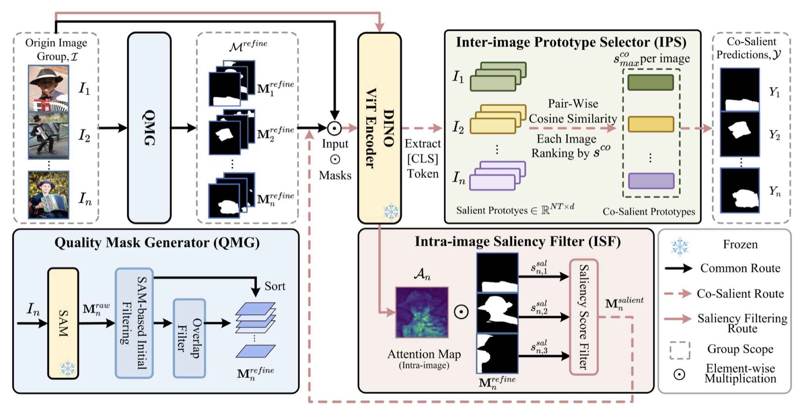

Training-free CoSOD
The method replaces dataset-specific training with a carefully structured inference-only pipeline based on SAM and DINO.
CVPR 2026

Figure 1. TF-SSD progressively narrows raw SAM masks into final co-salient predictions with DINO-guided filtering.
TF-SSD addresses co-salient object detection without task-specific training. Instead of learning a closed-set detector, it combines two strong foundation models: SAM supplies a large candidate mask pool and DINO contributes saliency cues and cross-image semantic consistency. The result is a pure inference pipeline that identifies the object consistently shared across an image group while retaining broad generalization beyond the training distribution of earlier CoSOD models.
TF-SSD is built around three filtering stages. The Quality Mask Generator (QMG) removes redundant or low-quality masks from SAM outputs. The Intra-image Saliency Filter (ISF) then uses DINO attention maps to keep masks aligned with salient regions in each image. Finally, the Inter-image Prototype Selector (IPS) computes similarity across image-group prototypes so the final selection preserves objects that are both salient and shared across the group.
This progressive narrowing strategy is the central design choice of TF-SSD: it starts from exhaustive proposals and delays co-saliency decisions until the pipeline has accumulated both single-image and cross-image evidence.
The method replaces dataset-specific training with a carefully structured inference-only pipeline based on SAM and DINO.
Mask quality, visual saliency, and group-level semantic consistency are checked in sequence rather than collapsed into one score.
The paper reports that TF-SSD surpasses prior training-free methods and remains competitive with training-based CoSOD systems.
The official CVPR results also report CoCA MAE improving from 0.115 to 0.077. Taken together, these numbers show that the progressive QMG-ISF-IPS pipeline is not just competitive for a training-free method; it substantially narrows the gap to training-based CoSOD systems on standard group-image benchmarks.
@inproceedings{he2026tfssd,
title = {TF-SSD: A Strong Pipeline via Synergic Mask Filter for Training-free Co-salient Object Detection},
author = {He, Zhijin and Jin, Shuo and Yu, Siyue and Wu, Shuwei and Zhang, Bingfeng and Yu, Li and Xiao, Jimin},
booktitle = {Proceedings of the IEEE/CVF Conference on Computer Vision and Pattern Recognition (CVPR)},
pages = {32216--32225},
year = {2026}
}